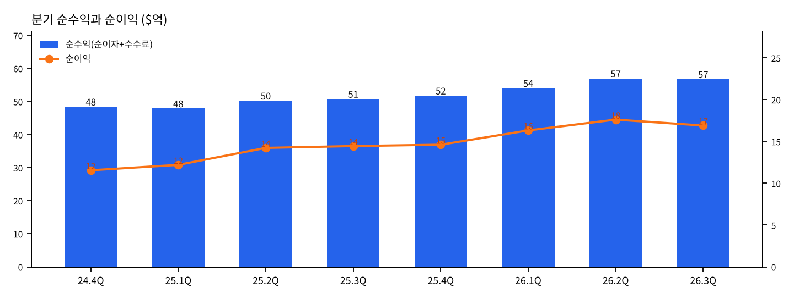
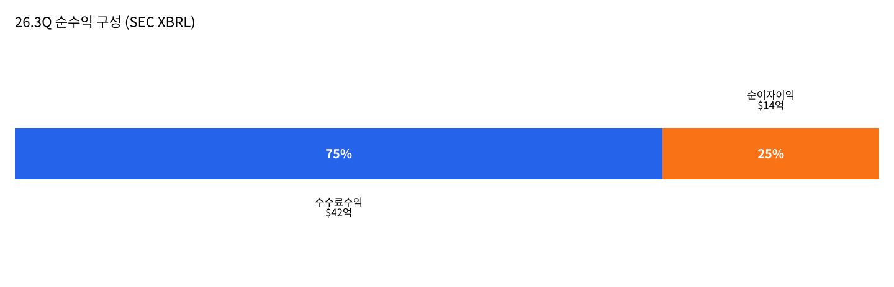
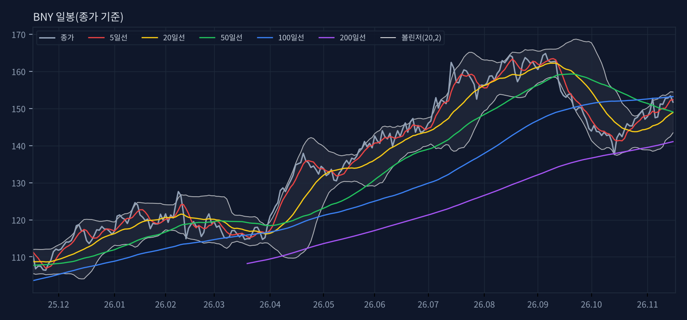
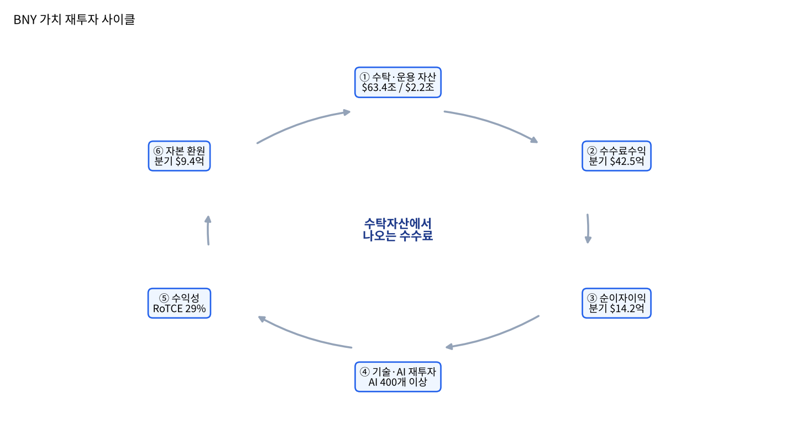

BNY는 기관투자자의 주식·채권을 맡아 보관하고 결제하는 세계 최대급 수탁은행이다. 맡은 자산(수탁자산 $63.4조)에서 받는 보관·청산·운용 수수료가 수익의 약 4분의 3이라 전통 은행보다 수수료 비중이 높다. 로버트 빈스 CEO 체제에서 기술·AI 투자를 늘리고 있다.
| 항목 | 내용 |
|---|---|
| 종목 | The Bank of New York Mellon Corp. (BNY, 구 BK) · NYSE · 본사 뉴욕 |
| 밸류에이션 | PER 16.8배 · P/S 4.82배 (2026.11.16 종가 $151.69) |
| 최근 분기(26.3Q) | 순수익 $57억, 순이익 $16.9억, EPS $2.34, RoTCE 29% |
| 자본 | CET1 11.0%, 3분기 자사주 $9.4억 |
| 규모 | 수탁자산 $63.4조, 운용자산 $2.2조 |
| 직책 | 인물 | 역할·특징 |
|---|---|---|
| CEO | 로빈 빈스 | 수탁·운용·기술 통합과 AI 도입을 이끄는 경영자 |
| CFO | 더모트 맥도나 | 실적·가이던스 발표 담당 |
경영 스타일: 비용 효율과 기술로 수탁 은행을 플랫폼화. 수익 증가율(+12%)이 비용 증가율(약 +8%)을 앞서는 영업 레버리지를 중시한다. AI 솔루션이 400개 이상 운영 중이다.
400개 이상의 AI 솔루션이 업무에 적용돼 있다. 맡은 자산 데이터가 AI의 학습·분석 재료다.
보관·결제·운용 서비스를 하나의 플랫폼으로 묶어 대형 기관이 BNY에 더 많은 업무를 맡기게 한다.
다음 실적발표는 세 가지 질문에 답하는 자리다.
1. 수수료수익이 계속 늘어나나?
2. 순이자이익이 +15% 가이던스를 달성하나?
3. 비용 증가가 수익 증가보다 낮나?
한 줄 판정 규칙: 첫 번째 질문(수수료수익)이 가장 중요한 고리다. 증시 환경에 따라 자산이 움직이는 점이 변수다.
일정: 다음 실적발표는 트레이딩뷰 추정 2027.01.15(회사 확정 일정은 확인 필요). 2026년 가이던스는 위에 적은 대로 제시돼 있다.
| 분기 | 순이자이익 | 수수료수익 | 비용 | 대손충당금 | 순이익 | EPS | 조정 EPS | 특이 사항 |
|---|---|---|---|---|---|---|---|---|
| 24.4Q | $12억 | $37억 | $34억 | $0.2억 | $12억 | $1.54 | – | |
| 25.1Q | $12억 | $36억 | $33억 | $0.2억 | $12억 | $1.58 | – | |
| 25.2Q | $12억 | $38억 | $32억 | $-0.2억 | $14억 | $1.93 | – | |
| 25.3Q | $12억 | $38억 | $32억 | $-0.1억 | $14억 | $1.88 | – | |
| 25.4Q | $13억* | $38억* | $34억* | $-0.3억* | $15억* | $2.02 | – | |
| 26.1Q | $14억 | $40억 | $34억 | $-0.1억 | $16억 | $2.24 | – | |
| 26.2Q | $14억 | $43억 | $34억 | $-0.1억 | $18억 | $2.45 | – | |
| 26.3Q | $14억 | $43억 | $35억 | $0.0억 | $17억 | $2.34 | – | 매출 $57억(+12%), 순이익 중 보통주분 $16.1억 |
EPS는 희석 GAAP 주당순이익이다. BNY는 조정 EPS를 트레이딩뷰에서 불러오지 못했고 최신 분기 Reported는 GAAP과 같아 –로 표시했다. 참고로 외부 집계(Zacks)의 26.3Q 조정 EPS는 $2.37이다. *는 연간 − 1~3분기 합으로 구한 근사치다.

흐름 요약: 순수익(순이자이익 + 수수료수익)은 24.4Q $48억에서 26.3Q $57억으로 늘었다. 순이익은 $11.6억에서 $16.9억으로 46% 늘었고 EPS는 $1.54에서 $2.34가 됐다. 충당금은 거의 0 수준이라 이익 변동이 작다.
| 구분 | 돈을 버는 방식 | 26.3Q | 비중 |
|---|---|---|---|
| 수수료수익 | 보관·청산·운용·자문 수수료 | $42.5억 | 75% |
| 순이자이익 | 예치금·투자 이자 − 이자 비용 | $14.2억 | 25% |

수익의 75%가 수수료라 금리보다 시장·자산 규모에 영향을 받는다. 부문별 이익은 이 양식에서 확인되지 않아 생략했다.
BNY의 목적은 "세계 금융시장의 보관·결제·운용 인프라"가 되는 것이다.
| 축 | 내용 |
|---|---|
| 수탁·청산 | 수탁자산 $63.4조 기반 수수료 |
| 운용·자문 | 운용자산 $2.2조 |
| 기술·AI | AI 솔루션 400개 이상 |
| 효율 | 영업 레버리지 확보 |
| 주주 환원 | 3분기 자사주 $9.4억 |

| 이동평균 | 값 | 종가 대비 | 위치 |
|---|---|---|---|
| 5일선 | $152.34 | -0.4% | 종가 아래 |
| 20일선 | $148.93 | +1.9% | 종가 위 |
| 50일선 | $149.02 | +1.8% | 종가 위 |
| 100일선 | $153.20 | -1.0% | 종가 아래 |
| 200일선 | $141.05 | +7.5% | 종가 위 |
52주 저가 $105.4(2025.11.21)에서 52주 고가 $165.8(2026.09.04)까지 올라왔고 종가 $151.69는 고가 대비 8.5% 아래, 200일선($141.1)보다 7.5% 위다.
| 규칙 | 기준 | 현재 값 | 신호 |
|---|---|---|---|
| 장기 추세 필터 | 종가 vs 200일선 | $151.70 > $141.05 | 매수 |
| 중장기 교차 | 50일선 vs 200일선 | $149.02 > $141.05 | 매수 |
| 단기 교차 | 20일선 vs 50일선 | $148.93 < $149.02 | 매도 |
| 돈키언 채널 | 55일 고가 $165.80 / 저가 $135.10 | 중간값 $150.45 위 | 매수 |
| 1개월 모멘텀 | 21거래일 수익률 | +5.9% (기준 $143.30) | 매수 |
| 3개월 모멘텀 | 63거래일 수익률 | -7.5% (기준 $163.90) | 매도 |
| 6개월 모멘텀 | 126거래일 수익률 | +11.1% (기준 $136.60) | 매수 |
| 12개월 모멘텀 | 252거래일 수익률 | +36.6% (기준 $111.00) | 매수 |
| 종합 (8개 평균) | +0.50 | 매수 우위 |
해석: 매수 신호 6개(장기 추세 필터, 중장기 교차, 돈키언 채널, 1개월 모멘텀, 6개월 모멘텀, 12개월 모멘텀), 매도 신호 2개(단기 교차, 3개월 모멘텀). 합계 +0.50이다. 14일 ATR $3.25 (2.1%), 52주 고가 $165.80 · 저가 $105.40.
| 가격 | 기준 | 무엇이 바뀌나 |
|---|---|---|
| $165.80 | 55일 고가 | 돌파 시 채널 상단 갱신 |
| $163.90 | 3개월 모멘텀 기준가 | 종가가 이 가격 위면 3개월 신호 매수 |
| $150.45 | 돈키언 중간값 | 55일 채널 중간값 위/아래로 신호가 바뀜 |
| $143.30 | 1개월 모멘텀 기준가 | 종가가 이 가격 위면 1개월 신호 매수 |
| $141.05 | 200일선 | 종가가 이 선 위/아래인지로 장기 추세 신호가 바뀜 |
| $136.60 | 6개월 모멘텀 기준가 | 종가가 이 가격 위면 6개월 신호 매수 |
| $135.10 | 55일 저가 | 이탈 시 채널 하단 갱신 |
| $111.00 | 12개월 모멘텀 기준가 | 종가가 이 가격 위면 12개월 신호 매수 |
가격 수준은 신호가 바뀌는 기준선일 뿐 진입·청산 가격 제안이 아니다. 20일/50일 교차는 이동평균 자체가 움직여 단일 가격으로 표시하지 않았다. 일봉·주봉은 종가 기준 직접 계산(고저 데이터 미사용)이다.
| 악재 요인 | 내용 | 강도 |
|---|---|---|
| 시장·자산 규모 의존 | 수수료수익 75%가 수탁·운용 자산 규모에 연동. 증시 하락 시 감소 | 중간 |
| 금리 하락 | 순이자이익(수익의 25%)이 2026 +15% 가이던스 | 중간 |
| 비용 증가 | 비용 $34.9억(약 +8%). 수익이 둔화되면 레버리지 감소 | 참고 |
| 높아진 가격 | PER 16.8배, P/S 4.82배로 피어 대비 높은 편 | 중간 |
| 티커 | 회사 | PER(TTM) | PEG | P/S | EPS 성장(YoY) |
|---|---|---|---|---|---|
| BNY | BNY | 16.8배 | 0.55 | 4.82배 | +31% |
| STT | 스테이트 스트리트 | 13.9배 | 0.48 | 3.40배 | +30% |
| NTRS | 노던 트러스트 | 13.8배 | 0.29 | 3.49배 | +49% |
| SCHW | 찰스 슈왑 | 15.8배 | 0.42 | 5.28배 | +38% |
| BLK | 블랙록 | 28.3배 | 2.94 | 6.89배 | +10% |
비교 결론: BNY의 PER 16.8배는 STT·NTRS(약 14배)보다 높고 블랙록(28.3배)보다 낮다. PEG 0.55는 STT(0.48)·NTRS(0.29)·SCHW(0.42)보다 높지만 투자 적격(1.0 이하) 안에 있다.
BNY는 적자 기업이 아니다(최근 4분기 순이익 $65억). 자본비율과 수탁자산으로 본다.
| 지표 | 값 | 의미 |
|---|---|---|
| CET1 | 11.0% | 손실 흡수력 |
| RoTCE | 29% | 유형자기자본이익률 |
| ROE (트레이딩뷰) | 15.0% | 자기자본이익률 |
| 수탁자산 · 운용자산 | $63.4조 · $2.2조 | 수수료 원천 |
| 자사주 | 3분기 $9.4억 | 분기 환원 |
| 기준 | 매출 | P/S | 비고 |
|---|---|---|---|
| 트레이딩뷰 | – | 4.82배 | 매출 기준 |
| 수탁·자산운용 피어(STT·NTRS·SCHW·BLK) | – | 약 4.77배 | 3.40 / 3.49 / 5.28 / 6.89 |
해석: BNY의 P/S 4.82배는 수탁·자산운용 피어 평균(약 4.77배)과 같은 수준이다. 일반 은행(P/S 2~4.6배)보다 높은 이유는 수수료 중심 구조와 높은 RoTCE(29%)다.
은행은 EBITDA 대신 충당금 전 영업이익(PPNR)을 쓴다. 순수익에서 비용을 뺀 값이다.
| 지표 | 값 | 산출 |
|---|---|---|
| 순수익 (TTM) | $220억 | SEC 합계 |
| 비용 (TTM) | $137억 | SEC 합계 |
| PPNR (TTM) | 약 $83억 — 흑자 | 순수익 − 비용(내 계산) |
| 순이익 (TTM) | $65억 | SEC 합계 |
| 26.3Q PPNR | 약 $21.9억 | $56.8억 − $34.9억 |
| 방식 | PER | EPS 성장률 | PEG | 판정 |
|---|---|---|---|---|
| 트레이딩뷰 (GAAP TTM $9.05) | 16.8배 | +30.6% | 0.55 | 투자 적격 |
| 직접 계산 (SEC TTM EPS) | 16.8배 | +30.6% | 약 0.55 | 투자 적격 |
판정: PEG 0.55 → 투자 적격(적극 매수 0.5 근접). 조정 EPS를 별도로 발표하지 않아 GAAP 기준이다. TTM EPS $9.05는 직전 4분기 약 $6.93보다 30.6% 늘었다(트레이딩뷰 기준). 일회성 조정 없이 GAAP 값 그대로 쓴다.

BNY 사이클은 수탁자산 → 수수료 → 효율 → 기술 재투자 → 고객 확대로 돈다.
| 고리 | 현재 숫자 | 고리 강도 | 약해지는 신호 |
|---|---|---|---|
| ① 수탁·운용 자산 | $63.4조 / $2.2조 | 강함 | 증시 하락, 자산 이탈 |
| ② 수수료수익 | 분기 $42.5억 | 강함 | 수수료율 하락 |
| ③ 순이자이익 | 분기 $14.2억, 2026 +15% | 진행 중 | 금리 하락 |
| ④ 기술·AI 재투자 | AI 400개 이상, 비용 $34.9억 | 진행 중 | 비용 > 수익 증가 |
| ⑤ 수익성 | RoTCE 29% | 강함 | 레버리지 감소 |
| ⑥ 자본 환원 | CET1 11.0%, 자사주 $9.4억 | 강함 | 환원 축소 |
사이클의 특징: 약한 고리는 ① 증시 연동성이다. 수수료가 수탁·운용 자산에 비례하므로 증시가 약해지면 수익이 줄어든다.